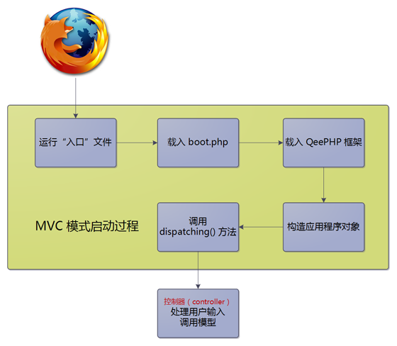
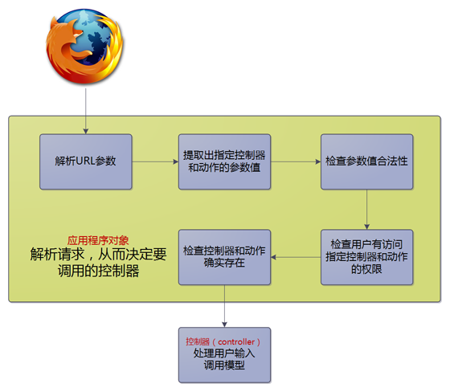

MVC模式的启动
在 QeePHP 应用中，启动 MVC 模式需要经过一系列的操作，了解这个过程可以帮助我们更好的使用 QeePHP。
QeePHP 启动 MVC 模式的主要步骤：

下面根据上图依次说明各个步骤载入的文件，以及文件的用途和主要功能。
入口文件
首先，所有的请求都会发送到一个特殊的 PHP 脚本文件。这个文件被称为“入口”。新建好的应用程序在 public 目录中有一个名为 index.php 的文件，这个文件就是“入口”。
“入口”的代码很少：
|
|
这个文件要做的事情就和代码中的注释一样，非常简单。
boot.php
入口载入的 boot.php 是一个非常重要的文件。
这个文件返回一个包含启动应用程序必须信息的数组，主要的返回内容包括：
QEEPHP_DIR
QeePHP 框架所在的目录。由于入口文件需要依赖该信息来正确载入 QeePHP 框架，所以这个设置一定不能搞错。如果已经将 QeePHP 框架所在目录加入了 php.ini 的 include_path 设置中，可以参考本教程后续的内容进行修改。APPID
标识应用程序的唯一 ID。每一个 QeePHP 应用程序都应该具有唯一的 ID。这个 ID 会被用于各种用途，包括生成缓存 ID、SESSION ID，以及 WebSetup 对应用程序的管理。APPID 只能使用字母和数字，并且不区分大小写。RUN_MODE
指定应用程序的运行模式。QeePHP 内置了三种运行：devel（开发阶段）、deploy（部署到生产环境）、test（自动化测试状态）。不同的运行模式会让框架采用不同的策略，对性能、安全性、调试信息输出等都有影响。具体信息请参考开发指南。ROOT_DIR、APP_DIR、CONFIG_DIR、MODULE_DIR
指定应用程序的各项目录，通常 boot.php 会自动设置这些选项，不需要手动指定。CONFIG_CACHE_BACKEND、CONFIG_CACHED、CONFIG_CACHE_SETTINGS
指定应用程序要使用的配置文件缓存服务，以及缓存设置。本教程里面不会用到这些设置，可以参考开发指南来修改这些设置的内容。boot.php 保存有对正常运行应用程序至关重要的信息，因此在确切搞懂上述设置之前，不要随意修改 boot.php 文件。有关 boot.php 的详细说明请参考开发指南的相关章节。
应用程序对象
在前面的 index.php 入口文件中，通过 MyApp::instance() 这样的调用构造了一个 MyApp 类的对象实例。这个对象就是应用程序对象，定义在 app/myapp.php 文件中。
应用程序对象封装了整个应用程序需要的一些公共服务，例如检查当前访问用户的身份、检查访问权限等等。
主要功能：
- 初始化应用程序运行环境
- 载入配置文件
- 设置异常处理函数
- 根据设置启动 session
- 解析请求，决定要调用的控制器
应用程序对象提供的基础服务：
- 取得当前访问用户的信息（需要启动 session）
- 将指定的用户信息保存到 session
- 从 session 清除用户信息
- 获得应用程序的设置
- 处理控制器或动作无法找到的异常情况
- 处理用户没有权限访问控制器的异常情况
在大部分 PHP 框架中，上述服务都被放到了框架中，但这是一种相当错误的做法。
虽然应用程序对象的功能几乎每一个应用都需要，但是许多应用在具体要求上都有区别。如果这些功能被放在框架中，框架设计者不得不留出接口来让开发者处理额外的情况，这不但会导致框架变得复杂臃肿，还增加了开发者的定制难度。而 QeePHP 将应用程序对象完全开放给开发者，让开发者可以按照自己的需求 100% 的定制。这种做法既避免了框架变得复杂，又降低了开发者的定制难度。
应用程序对象构造后，调用了该对象的 dispatching() 方法。这个方法内容按照如下的流程真正启动 MVC 模式：

当控制器被调用时，MVC 模式就完成了启动工作，接下来就是控制器和视图的交互，以及将操作结果返回给浏览器。